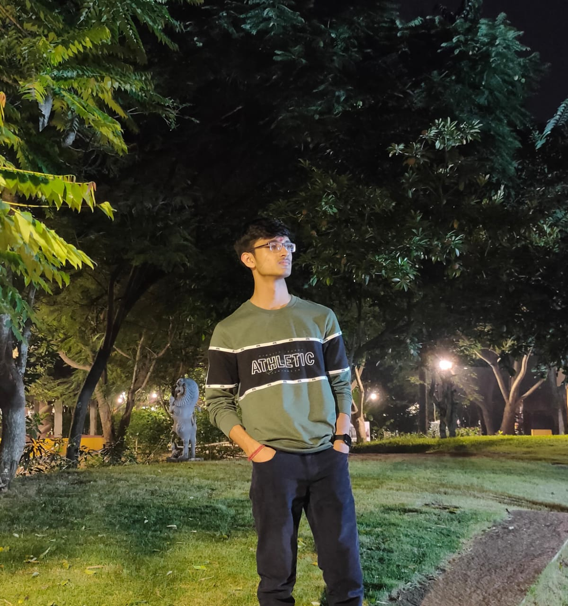
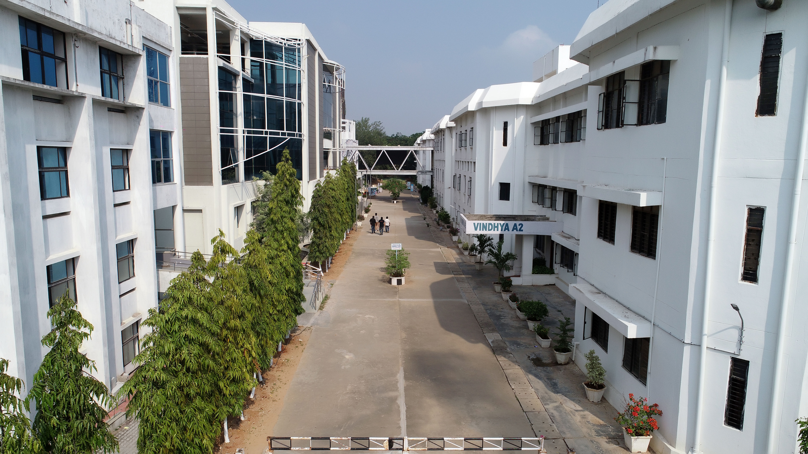

Hello, World!
Shreyas here.

About Me
- I am a first-year student at IIIT Hyderabad pursuing a B.Tech in Computer Science along with an MS by Research in the CNS stream.
- Thriving on the cutting edge of technology, my passion lies in becoming a proficient full-stack developer. Beyond the realms of academics, I am an avid competitive programmer, finding joy in the art of problem-solving and algorithmic challenges.
- My interests extend beyond the digital realm, as I am an enthusiast of chess and basketball, finding both strategic moves on the board and the dynamic plays on the court equally exhilarating. When not immersed in coding or sports, you can often find me engrossed in the captivating world of anime, exploring diverse storylines and art styles.
- I approach education with an insatiable thirst for knowledge, valuing a genuine understanding over rote memorization. Eager to grasp concepts the right way, my focus is on deepening my understanding rather than merely preparing for exams. I believe in continuous learning, embracing opportunities to broaden my horizons and stay ahead in the ever-evolving landscape of technology.
- Open PDF
Timeline
2023

Joined IIIT Hyderabad under the BTechCS + MS by Research in CNS stream
2023
Completed my 12th grade from Alpine Public School, Bangalore, CBSE Board with 96%
2021
Completed my 10th grade from Vibgyor High School, Bangalore, ICSE Board with 95%
Achievements
- Captain Crunch-Time
Successfully crammed an entire semester's worth of knowledge into a single caffeine-fueled all-nighter, earning the prestigious title of "Master of the Midnight Study Session." - Procrastination Prodigy
Delivered A-grade assignments with such finesse that it seemed like they were effortlessly pulled together at the last minute, proving that deadlines are more like suggestions. - Snack-Attack Specialist
Developed a sixth sense for detecting the most obscure vending machines on campus, ensuring a constant supply of study fuel in the form of chips, candy, and energy drinks. - Zen Master of Zoning Out
Achieved a state of unparalleled concentration during lectures while appearing completely disconnected, mastering the art of nodding in agreement while mentally planning the next weekend adventure. - Sleep Deprivation Survivor
Conquered the treacherous landscape of sleepless nights and early morning classes, wearing the bags under the eyes as a badge of honor. - Emoji Linguist
Communicated entire paragraphs of emotion and expression using only emojis, turning mundane text conversations into a colorful and comedic masterpiece. - Professor's Pet Detective
Developed the uncanny ability to predict exam questions with eerie accuracy, making it seem as if the syllabus was a secret code waiting to be deciphered. - WiFi Warrior
Navigated the unpredictable seas of campus WiFi, finding the one elusive spot with a perfect connection for last-minute research and online assignments. - Netflix Ninja
Achieved the perfect balance between binge-watching favorite shows and acing exams, proving that a good TV series is the ideal study break.
Technical Skills
Python
Artisitic Skills
Theatre
Sketching
Painting